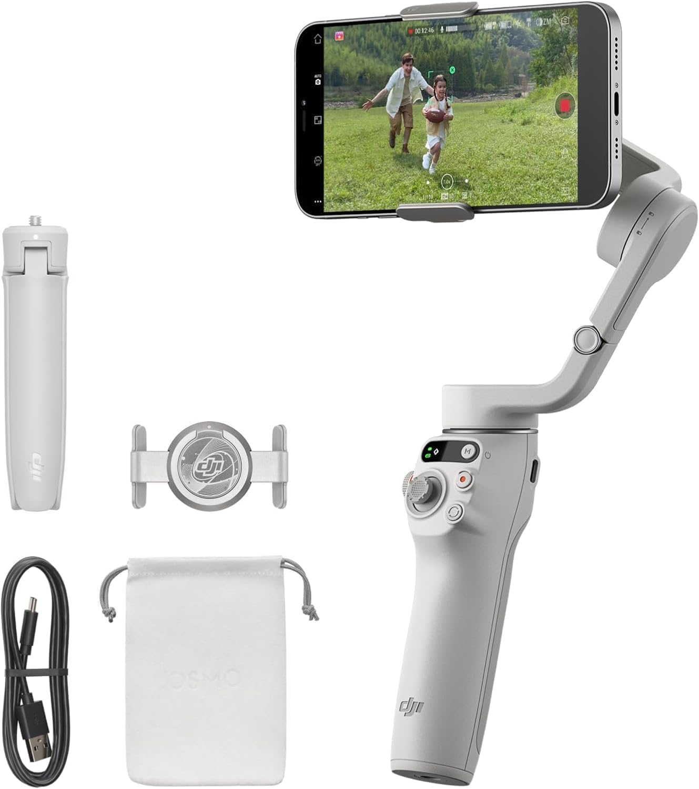

DJI Osmo Mobile 6 Review: Still the Best Smartphone Gimbal?
Last updated: August 24, 2026 · Research-based guide · techpicksio.com
Buy it. If you shoot alone, the DJI Osmo Mobile 6 is still the smartphone gimbal to get in 2026. The magnetic clamp removes the manual balancing step that leaves cheaper gimbals sitting unused in a bag, and ActiveTrack 6.0 keeps you framed when there's nobody behind the camera to do it for you. Skip it if you shoot with a thick case you won't remove, or you need more than ~6.4 hours of runtime — those are its two real limits, and neither has a workaround.
How we pick: published manufacturer specifications and aggregated user reviews — not hands-on testing.

DJI Osmo Mobile 6
The one to buy if you shoot alone and nobody is there to reframe for you. Order it before your next shoot day rather than the morning of.
- Stabilization
- 3-axis motorized
- Setup time
- Magnetic, ~5 sec
- Battery
- Up to ~6.4 hrs
Newer to this than the guide above assumes? Start with the content creator starter kit — the four pieces worth owning before you compare models in any one category.
Key Technical Specifications
| Specification | What It Means for You |
|---|---|
| Stabilization | 3-axis motorized gimbal — walking and running shots stay level instead of bouncing, so you can skip stabilizing footage in post |
| Weight | 309g (gimbal) + 31g (magnetic clamp) — light enough to hold overhead one-handed for a full run of B-roll without your arm giving out |
| Tracking | ActiveTrack 6.0 (face and body) — keeps you in frame solo, so you don't need a second person operating camera |
| Extension Rod | Built-in 215mm (8.5") telescopic — gets you overhead and low-angle shots without packing a separate monopod |
| Rated Battery | Up to ~6.4 hours (DJI figure) — enough for most half-day shoots on a single charge, though heavy trackers should budget a top-up |
What Sets It Apart
Magnetic Quick-Release Setup
Traditional gimbals require manual mechanical balancing before use, which can mean missed moments. The Osmo Mobile 6 uses a magnetic phone clamp that removes that step — you snap the phone into the clamp, unfold the arm, and the motors engage. For creators who frequently pull their phone out and put it back, this is the feature most often cited as the reason to choose it over cheaper gimbals.
ActiveTrack 6.0 Subject Tracking
ActiveTrack 6.0 is the feature that most distinguishes the Osmo Mobile 6 from budget competitors. According to DJI and corroborated across user reviews, it's designed to keep a subject centered in frame even as they move, turn, or briefly pass behind an obstacle — the core need for single-operator vloggers who can't adjust framing while filming.
👍 Why We Picked It
- ✅ Fast setup via magnetic quick-release clamp
- ✅ Capable companion app with guided templates
- ✅ Side wheel for manual zoom and focus control
👎 Where It Falls Short
- ❌ Battery life shorter than some earlier DJI gimbals
- ❌ Thick phone cases can interfere with the magnetic clamp
See Current Amazon Deal on the Osmo Mobile 6 →
Frequently Asked Questions
Is the DJI Osmo Mobile 6 still worth buying?
Yes — buy it if you shoot alone. The magnetic clamp and ActiveTrack 6.0 are what justify it over a cheaper gimbal: one removes the balancing step that leaves gimbals unused in bags, the other keeps you framed when nobody is operating the camera. If you always shoot with a second person, you can spend less.
Does the Osmo Mobile 6 work with a phone case on?
Slim cases work. Thick cases do not — this is the single most reported problem with the Osmo Mobile 6, and there is no workaround. If you use a heavy protective case and won't take it off to shoot, buy a clamp-style gimbal instead.
What is ActiveTrack 6.0?
It's DJI's subject-tracking feature that keeps a person centered in frame as they move, turn, or briefly pass behind an obstacle. It's the main reason solo vloggers choose it over cheaper gimbals, since you can't reframe the shot while you're in it.
How long does the Osmo Mobile 6 battery last?
DJI rates it at up to roughly 6.4 hours. That's shorter than some earlier DJI gimbals, which is a common note in user reviews.